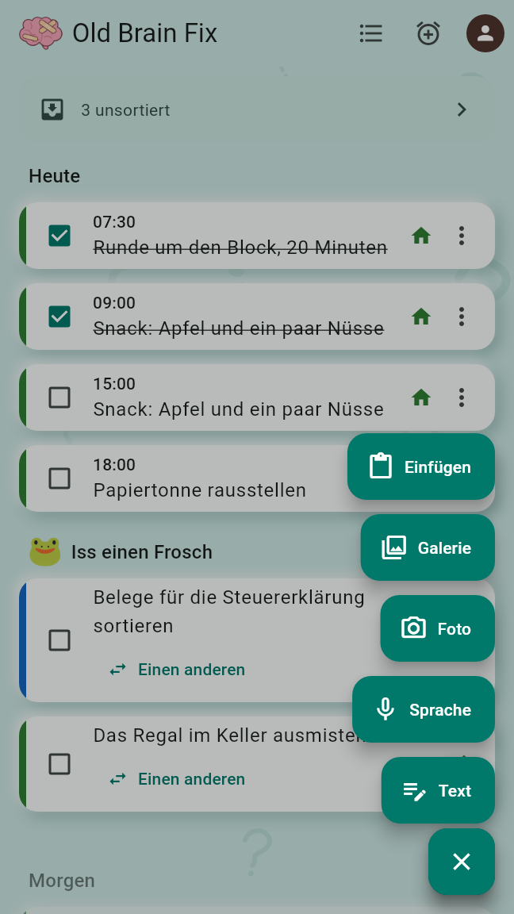
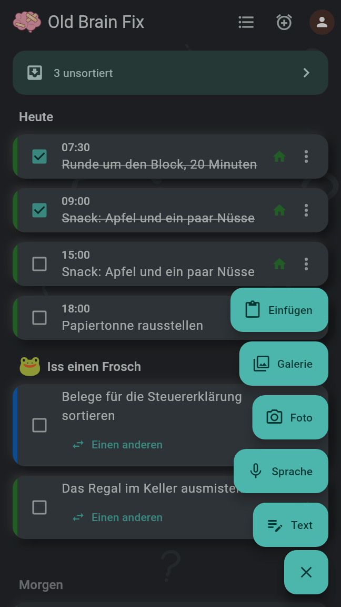
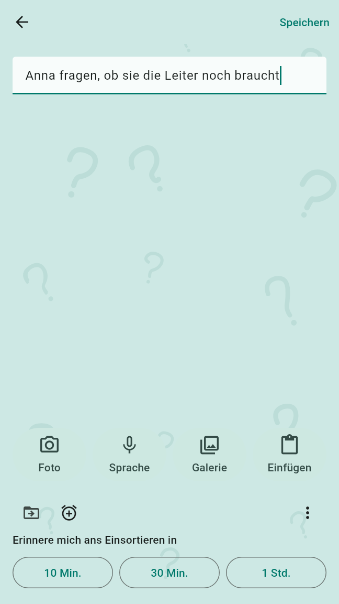
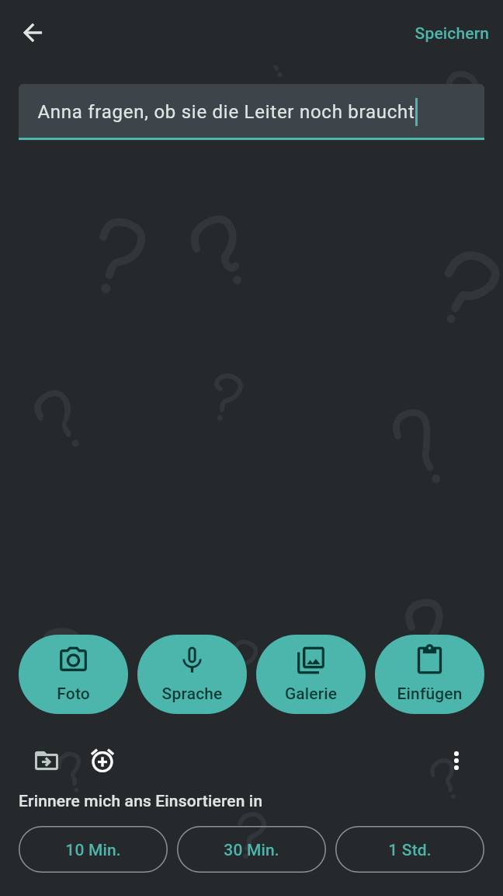
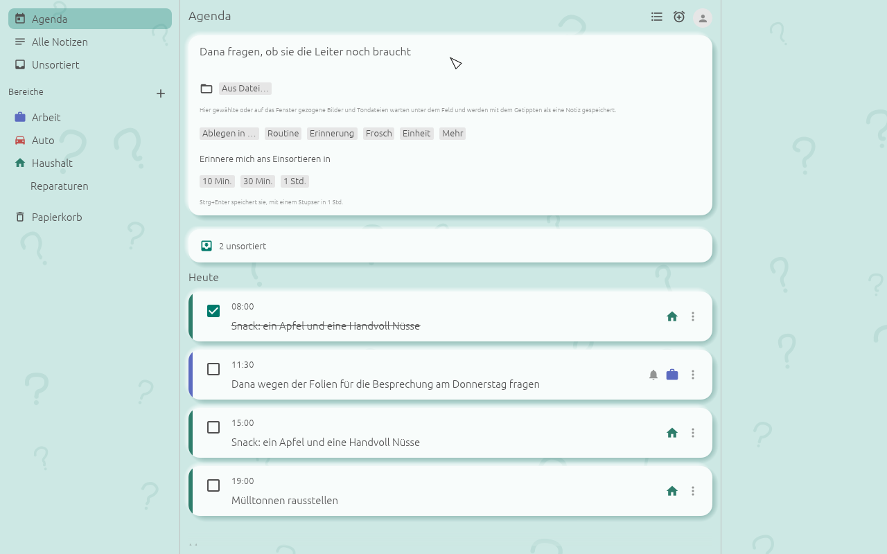
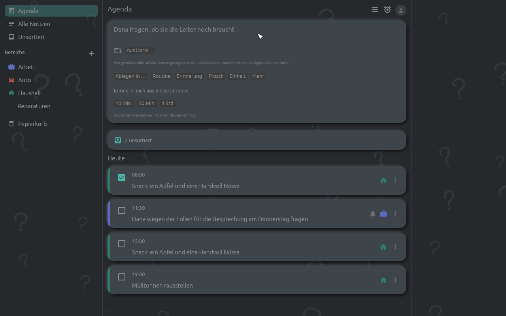

Eine Notiz zu erfassen braucht einen Tipp und fragt nie etwas, nicht einmal nach der App-Sperre. Sortieren geht auf dem Erfassungsbildschirm oder später; bis eine Notiz einsortiert ist, ist sie unsortiert, und der Stupser erinnert daran.
Das „+“ der Agenda fächert die Wege zum Erfassen auf, vom Knopf nach oben, jeder ein Symbol mit seinem Wort:
Sprache, Foto, Galerie und Einfügen stehen nur da, wo das Gerät sie hat. Solange der Fächer offen ist, wird „+“ zu Schließen; ein zweiter Tipp darauf, ein Tipp daneben oder Zurück schließt ihn.


Der Erfassungsbildschirm enthält das Textfeld („Was geht dir durch den Kopf?“), die Knöpfe Foto, Sprache, Galerie und Einfügen, die Aktionszeile der Notizkarte und unten „Erinnere mich ans Einsortieren in“ mit 10 Min., 30 Min. und 1 Std.
Speichern in der oberen Leiste, Zurück und der Wechsel der App in den Hintergrund speichern ebenfalls; der Stupser ist dann 1 Std. Eine leere Notiz wird nicht gespeichert. Nach dem Speichern steht die Karte der neuen Notiz oben auf der Agenda, mit denselben Möglichkeiten für das, was beim Erfassen nicht erledigt wurde, darunter das Zusammenführen mit einer anderen Notiz.


Über den Stupser-Knöpfen steht die Aktionszeile der Notizkarte. Alles davon ist freiwillig:
Jede Wahl kommt zum Erfassungsbildschirm zurück und steht oben, etwa „→ Haushalt“, die meisten mit einem Knopf, der sie wieder entfernt. Nichts davon wird vor der Notiz gespeichert. Sobald die Notiz einen Bereich oder ein Thema hat oder eine Routine, Erinnerung, einen Frosch, eine Einheit oder eine Strichliste, braucht sie keinen Stupser: Aus den drei Knöpfen wird ein Speichern.
Hinter der App-Sperre bietet die Zeile weder Ablegen in … noch die Einheit an, die die Bereiche und Strichlisten zeigen würden. In einem geteilten Bereich, in dem du Mitglied bist, legt nur ein Verwalter Routinen, Erinnerungen und Frösche an; der Wecker fehlt dort.
Damit wird jede Zeile des Erfassten eine Zeile der Einkaufsliste, die du wählst, und keine Notiz bleibt. Solange eine Liste gewählt ist, warten die anderen Möglichkeiten verborgen. Es wird nur angeboten, wenn es eine Liste zum Hinzufügen gibt und das Erfasste kein Foto enthält; ein danach aufgenommenes oder eingefügtes Foto hebt es auf, und hinter der App-Sperre wird es nicht angeboten. Eine Aufnahme liefert die Zeilen ihres Transkripts, deshalb wird es mit einer Aufnahme nur angeboten, wo das Sprachmodell da ist. Bis das Transkript vorliegt, wartet die Notiz unsortiert und geht dann in die Liste; ohne Transkript bleibt sie eine Notiz, und eine Zeile oben sagt das.
Die schnellen Einstiege öffnen ihren Erfassungsbildschirm direkt, ohne Fächer und ohne Bildschirm dazwischen: Text mit der Tastatur, Sprache mit laufender Aufnahme, Foto mit offener Kamera.
Solange die App-Sperre an ist, hat ihr Sperrbildschirm ein eigenes „+“ mit demselben Fächer, und jeder schnelle Einstieg öffnet das Erfassen ohne Entsperren.
Solange Notizen unsortiert sind, zeigt die Agenda oben „x unsortiert“, das sie öffnet. Der Stupser ist eine Benachrichtigung für alle, etwa „3 Notizen sind unsortiert“, zuerst zur frühesten Zeit, die beim Erfassen gewählt wurde. Sie bietet 10 Min., 30 Min. und 1 Std. zum Verschieben; ein Tipp darauf öffnet „Warten aufs Einsortieren“ mit den drei ältesten unsortierten Notizen und „+x“ für alle.
Ein unbeachteter Stupser kommt wieder, bis keine Notiz mehr unsortiert ist, nach der Zeit, die in den Einstellungen unter „Erneut stupsen nach“ steht (1 Std., solange nicht geändert). In der Ruhezeit, 22:00 bis 08:00 Uhr, solange nicht geändert, warten Stupser, bis sie endet; Routinen und Erinnerungen klingeln trotzdem pünktlich.
Das Erfassungsfeld steht über der Agenda und über jeder Liste von Notizen außer dem Papierkorb („Was geht dir durch den Kopf?“). Enter beginnt eine neue Zeile; Strg+Enter (Cmd+Enter unter macOS) speichert die Notiz mit einem Stupser in 1 Std. Sobald etwas getippt oder aufgenommen ist, erscheinen die Aktionszeile und „Erinnere mich ans Einsortieren in“ mit 10 Min., 30 Min. und 1 Std.
Text, der beim Schließen des Fensters noch getippt ist, und Bilder und Dateien, die noch warten, bleiben als Notiz erhalten, mit einem Stupser in 1 Std.


Das Tastenkürzel, Strg+Alt+N, solange nicht geändert, öffnet das Fenster „Notiz erfassen“ über allen anderen Fenstern. Es wirkt, solange Old Brain Fix läuft; wo es einen Infobereich gibt, läuft die App dort weiter, wenn ihr Fenster geschlossen ist. Das Erfassen-Fenster enthält ein einzeiliges Feld, Sprache aufnehmen, Einfügen, dieselbe Aktionszeile und die Stupser-Knöpfe. Enter speichert die Notiz mit einem Stupser in 1 Std.; Esc und der Schließen-Knopf behalten Getipptes genauso, und ein leeres Fenster schließt nur.
Das Kürzel stellst du in den Einstellungen unter „Schnell erfassen“ im Feld „Tastenkürzel“ ein; es braucht Strg, Alt oder Super. Unter X11, Windows und macOS belegt die App die Taste selbst. Unter Wayland verwaltet die Arbeitsumgebung das Kürzel: Sie fragt einmal nach und lässt es dich in ihren eigenen Tastatureinstellungen ändern. Ist die Taste belegt oder ist kein Tastenkürzel möglich, sagt das die Zeile unter dem Feld. Auch das Menü im Infobereich hat Notiz erfassen.
oldbrainfix capture öffnet das Erfassen-Fenster.oldbrainfix capture Milch kaufen behält „Milch kaufen“ sofort als unsortierte Notiz mit einem Stupser in 1 Std., ohne Fenster.oldbrainfix capture - behält, was über die Standardeingabe kommt.Starter, Tastenkürzel-Programme und Makro-Tastaturen können diese Befehle ausführen, auch wo die Arbeitsumgebung kein Tastenkürzel anbietet.
Der Stupser erscheint als Benachrichtigung, etwa „3 Notizen sind unsortiert“, „Klicke, um sie einzusortieren.“. Unter Linux und Windows hat sie die Knöpfe 10 Min., 30 Min. und 1 Std. zum Verschieben und „Old Brain Fix öffnen“; unter macOS erscheint sie ohne Knöpfe. Ein Klick darauf öffnet das Fenster bei „Unsortiert“. Der Schalter „Benachrichtigungen auf diesem Computer“ in den Einstellungen schaltet Benachrichtigungen ab.